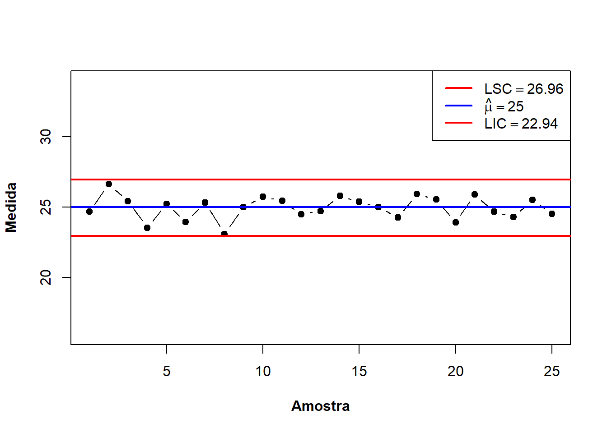
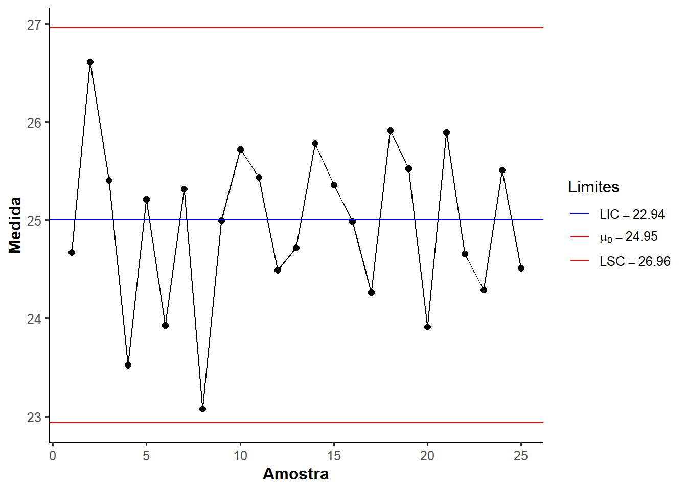
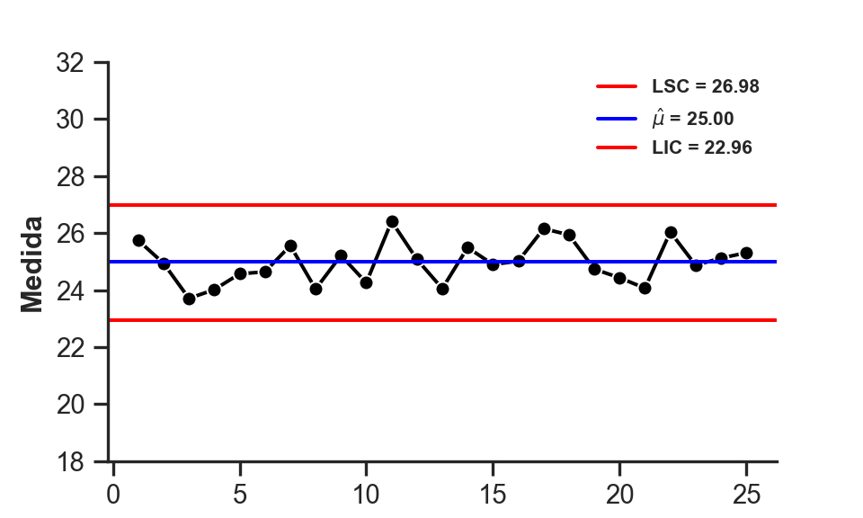

Os gráficos de controle para variáveis são ferramentas estatísticas desenvolvidas para monitorar características da qualidade que podem ser medidas em escala contínua, como diâmetro, peso, volume, temperatura ou tempo. Diferem dos gráficos para atributos, que se baseiam em classificações qualitativas (conforme/não conforme, defeituoso/não defeituoso), ao permitir uma análise mais detalhada tanto da tendência central quanto da variabilidade do processo.
A lógica subjacente é simples, mas poderosa: todo processo produtivo apresenta flutuações naturais, chamadas de causas comuns de variação. No entanto, alterações significativas — as chamadas causas especiais — indicam que o processo pode estar fora de controle. Os gráficos para variáveis foram construídos justamente para separar esses dois tipos de variação, permitindo identificar quando uma intervenção é necessária.
Entre os gráficos mais utilizados destacam-se:
Gráficos de Médias e Amplitudes (\(\bar{X}\) e R): adequados quando o tamanho da amostra é pequeno (tipicamente \(n \leq 10\)). O gráfico \(\bar{X}\) monitora a média amostral, enquanto o gráfico R acompanha a variabilidade por meio da amplitude.
Gráficos de Médias e Desvios-Padrão (\(\bar{X}\) e \(S\)): preferidos quando o tamanho das amostras é maior (\(n > 10\)) ou variável, por utilizarem o desvio padrão como medida mais robusta de dispersão.
Gráficos de Medidas Individuais e Amplitudes Móveis (I-MR): aplicáveis quando não há possibilidade de coletar subgrupos de tamanho maior que 1. O gráfico I acompanha as observações individuais, enquanto o MR mede a variação entre observações consecutivas.
Esses gráficos compartilham uma estrutura comum: uma linha central (LC) que representa o valor esperado sob controle e dois limites de controle — superior (LSC) e inferior (LIC) — que delimitam a faixa de variação natural do processo. Valores fora dessa faixa, ou padrões não aleatórios dentro dela, são interpretados como indícios de descontrole.
O uso adequado de gráficos para variáveis depende de decisões fundamentais: o tamanho e a frequência das amostras, a definição de subgrupos racionais e a escolha entre amplitude ou desvio padrão como medida de dispersão. Tais escolhas impactam diretamente a sensibilidade do gráfico em detectar mudanças, assim como o custo de amostragem.
Por sua capacidade de revelar simultaneamente oscilações na média e na variabilidade, os gráficos de controle para variáveis continuam sendo uma das ferramentas mais robustas e versáteis do Controle Estatístico de Qualidade, sustentando análises confiáveis em diferentes contextos produtivos e de serviços.
2.2 Gráfico de Controle para \(\bar{X}\)
Para a construção dos Gráfico de Controle de \(\bar{X}\), suponha que a característica de interesse, \(X\), tem média \(\mu\) e desvio padrão \(\sigma\), conhecidos. Desta forma, ao retirar uma amostra \(X_{1}, X_{2}, \ldots, X_{n}\) de tamanho \(n\), a média amostral é dada por: \[\bar{X} = \dfrac{\sum_{i=1}^{n} X_{i}}{n}\]
Pelo Teorema Central do Limite (TCL), sabe-se que \(\bar{X}\) é normalmente distribuído com média \(\mu\) e variância \(\sigma^{2}/n\). Usando os fundamentos de estimação intervalar, temos que o Intervalo de Confiança (IC) de \(100(1 - \alpha)\)% para \(\mu\) é expresso como: \[\bar{X} \pm z_{\alpha/2} \sqrt{\sigma^{2}/n}.\]
Baseado nisso, Shewhart propôs, de modo geral, que temos um estimador \(T\) de alguma característica de qualidade. A partir desse princípio, a estrutura de um Gráfico de Controle Shewhart é definida por três linhas principais: uma Linha Central (LC), um Limite Superior de Controle (LSC) e um Limite Inferior de Controle (LIC).
Se considerarmos \(T\) como esse estimador, com média \(\mu_T\) e desvio-padrão \(\sigma_T\), os limites são calculados da seguinte forma:
\[
\text{Limites} = \begin{cases} \mu_T - L\sigma_T, \quad \text{se o Limite for Inferior} \\ \mu_T, \quad \text{se o Limite for Central} \\ \mu_T + L\sigma_T, \quad \text{se o Limite for Superior} \end{cases}
\tag{2.1}\]
Nessas fórmulas, \(L\) representa a distância dos limites de controle em relação à linha central, expressa em unidades de desvio-padrão. Os limites são determinados com base na média e no desvio-padrão da variável quando o processo está operando isento de causas atribuíveis, ou seja, quando está sob controle estatístico.
Contudo, a escolha do valor de L é uma tarefa fundamental, pois impacta diretamente a sensibilidade do gráfico e as taxas de erro. Existe um trade-off clássico entre os erros tipo I e tipo II:
Se L é grande: Os limites de controle ficam mais afastados da média. Isso diminui a probabilidade de um Erro Tipo I (alarme falso), mas aumenta a de um Erro Tipo II (falhar em detectar um processo fora de controle).
Se L é pequeno: Os limites ficam mais próximos da média, o que aumenta a sensibilidade a desvios. Consequentemente, a probabilidade de Erro Tipo I sobe, enquanto a de Erro Tipo II diminui.
Nos EUA, tornou-se prática padrão utilizar L = 3, estabelecendo os chamados “limites de 3 sigmas”. Como mencionado no início, a base para isso vem do Teorema Central do Limite. Com L = 3, a probabilidade de um ponto da média amostral cair fora dos limites de controle por puro acaso (Erro Tipo I) é extremamente baixa, calculada como \(0.0026998\). Isso significa que, em média, um sinal incorreto de que o processo está fora de controle será gerado apenas a cada 370 pontos amostrais, aproximadamente.
2.2.1 Limites de Probabilidade e de Alerta
1. Limites de Probabilidade: Uma abordagem alternativa, mais comum no Reino Unido e em partes da Europa Ocidental, é o uso de Limites de Probabilidade. Em vez de fixar \(L\), primeiro se especifica a probabilidade de Erro Tipo I (\(\alpha\)) desejada. Por exemplo, se especificarmos um \(\alpha = 0,001\), esperamos um falso alarme a cada 1000 pontos. A partir desse \(\alpha\), determinam-se os valores correspondentes da distribuição normal-padrão (\(z_{\alpha/2}\)) para calcular os limites.
2. Limites de Alerta (2\(\sigma\)): Para aumentar a sensibilidade do gráfico, alguns analistas sugerem o uso de dois conjuntos de limites:
Limites de Ação (3\(\sigma\)): São os limites de controle tradicionais (LIC e LSC). Quando um ponto cai fora deles, uma ação corretiva é necessária para encontrar a causa atribuível;
Limites de Alerta (2\(\sigma\)): São limites mais estreitos. Se um ou mais pontos se situam entre os limites de alerta e os de ação, isso serve como um aviso de que o processo pode não estar operando adequadamente, justificando uma maior atenção.
O ponto positivo dessa abordagem é o aumento da sensibilidade para detectar desvios. O ponto negativo, no entanto, é que ela também aumenta o risco de alarmes falsos.
2.3 Exemplos Computacionais
Será apresentados alguns exemplos computacionais de como realizar o gráfico de controle para \(\bar{X}\). A maioria dos dados serão provinientes de simulação para fins didáticos.
# Número de Amostras Selecionadask <-25# Tamanho de cada Amostran <-5# Simular Dados e Adicionar Ruído aos Dadosset.seed(42)vec.data <-rnorm(k * n, mean =25, sd =1.5) +rnorm(k * n, mean =0, sd =1.2)# Organizar a Matriz de Dadosmatrix.data <-matrix(vec.data, nrow = k, ncol = n, byrow =TRUE)# Vetor de Médiasvec.means <-apply(matrix.data, 1, mean)# Vetor de Desviosvec.sds <-apply(matrix.data, 1, sd)# Estimar Algumas Quantidadesx.bar <-mean(vec.means)x.std <-1.5# Construir LimitesLIC <- x.bar - (3/sqrt(n)) * x.std # Limite Inferior de ControleLC <-25# Limite CentralLSC <- x.bar + (3/sqrt(n)) * x.std # Limite Superior de Controle# Definir limites do eixo Y para garantir que tudo seja visívelylim <-c(min(vec.means, LIC) -7, max(vec.means, LSC) +7)# Criar o gráfico principal com pontos e linhasplot(x =1:k, y = vec.means,type ="b", # "b" para both (pontos e linhas)xlab ="Amostra",ylab ="Medida",ylim = ylim,pch =19, # Tipo de ponto (círculo sólido)col ="black",font.lab =2# Deixa os títulos dos eixos em negrito)# Adicionar as linhas de controleabline(h = LIC, col ="red", lwd =2)abline(h = LC, col ="blue", lwd =2)abline(h = LSC, col ="red", lwd =2)# Adicionar a legendalegend("topright",legend =c(bquote(LSC == .(round(LSC, 2))),bquote(hat(mu) == .(round(LC, 2))),bquote(LIC == .(round(LIC, 2))) ),col =c("red", "blue", "red"),lwd =2,bty ="solid"# "n" Remove a caixa ao redor da legenda)

Código
library(ggplot2)# Número de Amostras Selecionadask <-25# Tamanho de cada Amostran <-5# Simular Dados e Adicionar Ruído aos Dadosset.seed(42)vec.data <-rnorm(k * n, mean =25, sd =1.5) +rnorm(k * n, mean =0, sd =1.2)# Organizar a Matriz de Dadosmatrix.data <-matrix(vec.data, nrow = k, ncol = n, byrow = T)# Vetor de Médiasvec.means <-apply(matrix.data, 1, mean)# Vetor de Desviosvec.sds <-apply(matrix.data, 1, sd)# Estimar Algumas Quantidadesx.bar <-mean(vec.means)x.std <-1.5# Construir LimitesLIC <- x.bar - (3/sqrt(n)) * x.std # Limite Inferior de ControleLC <-25# Limite CentralLSC <- x.bar + (3/sqrt(n)) * x.std # Limite Superior de Controle# Construir Gráfico de Controle no ggplot2ggplot(data =NULL, aes(x =1:k, y = vec.means)) +geom_point(size =2) +geom_line() +geom_hline(aes(yintercept = LIC, color ="LIC")) +geom_hline(aes(yintercept = LC, color ="LC")) +geom_hline(aes(yintercept = LSC, color ="LSC")) +scale_color_manual(values =c("LIC"="red", "LC"="blue", "LSC"="red"),labels =c(bquote(LIC == .(round(LIC, 2))),bquote(mu[0] == .(round(x.bar, 2))),bquote(LSC == .(round(LSC, 2))) ) ) +labs(x ="Amostra",y ="Medida",color ="Limites" ) +theme_classic(base_size =12) +theme(axis.title.x =element_text(face ="bold"),axis.title.y =element_text(face ="bold") )

Código
import numpy as npimport seaborn as snsimport matplotlib.pyplot as plt# Parâmetrosk =25# Número de Amostrasn =5# Tamanho de cada Amostra# Simular dados com semente de aleatoriedade para reprodutibilidadenp.random.seed(42)vec_data = np.random.normal(loc=25, scale=1.5, size=k*n) + np.random.normal(loc=0, scale=1.2, size=k*n)# Organizar a matriz de dadosmatrix_data = vec_data.reshape(k, n)# Vetor de médias (média de cada linha)vec_means = matrix_data.mean(axis=1)# Vetor de desvios (desvio padrão amostral de cada linha, ddof=1)vec_sds = matrix_data.std(axis=1, ddof=1)# Estimar quantidadesx_bar = vec_means.mean()x_std =1.5# Construir limiteslic = x_bar - (3/ np.sqrt(n)) * x_std # Limite Inferior de Controlelc =25# Limite Centrallsc = x_bar + (3/ np.sqrt(n)) * x_std # Limite Superior de Controle# Configurar o estilo do gráficosns.set_theme(style="ticks") # Similar ao theme_classic()# Configurações de Figurafig, ax = plt.subplots(figsize=(5, 3), dpi=800)sns.lineplot(x=range(1, k+1), y=vec_means, marker="o", color="black", ax=ax)# Plotar as linhas de controleax.axhline(y=lsc, color="red", linestyle="-", label=f"LSC = {lsc:.2f}")ax.axhline(y=lc, color="blue", linestyle="-", label=f"$\\hat{{\\mu}}$ = {lc:.2f}") # Usando LaTeX para muax.axhline(y=lic, color="red", linestyle="-", label=f"LIC = {lic:.2f}")# Configurações de eixos e títulosax.set_ylim(18, 32)
(18.0, 32.0)
Código
ax.set_xlabel("Amostra", weight="bold", fontsize=12)ax.set_ylabel("Medida", weight="bold", fontsize=12)# Configurações de Legendaax.legend(prop={"size":8, "weight": "bold"}, loc="upper right", frameon=False) # bbox_to_anchor=(1, 0.5), # Outras configuraçõesax.spines["top"].set_visible(False)ax.spines["right"].set_visible(False)# Exibição da Figuraplt.show()

2.3.1 Demais Variações do Gráfico de Controle de \(\bar{X}\)
2.3.1.1 Gráficos de Médias e Amplitudes (\(\bar{X}\) e \(R\))
Na prática da construção de gráficos de controle, a média (\(\mu\)) e o desvio-padrão (\(\sigma\)) do processo raramente são conhecidos. Portanto, esses parâmetros precisam ser estimados a partir de dados amostrais. A premissa fundamental é que essas amostras, ou subgrupos, sejam coletadas em um momento em que o processo esteja operando sob controle estatístico.
Para isso, Walter Shewhart sugeriu um método prático: a coleta de \(m\) subgrupos (geralmente entre 20 a 25) de tamanho \(n\) relativamente pequeno (4, 5 ou 6 itens cada). Essa abordagem visa a construção de “subgrupos racionais” com um baixo custo de amostragem.
Para estimar a média global do processo, \(\mu\), utilizamos a média das médias de todos os subgrupos. Sejam \(\bar{X}_1, \bar{X}_2, \ldots, \bar{X}_m\) as médias de cada um dos \(m\) subgrupos. O melhor estimador para \(\mu\) é a grande média, denotada por \(\bar{\bar{X}}\): \[\bar{\bar{X}} = \frac{\sum_{i=1}^{m} \bar{X}_i}{m}.\]
Onde \(\bar{X}_i\) é a média amostral do i-ésimo subgrupo. Por essa razão, o valor de \(\bar{\bar{x}}\) será usado como a linha central (LC) do gráfico \(\bar{X}\).
Para construir os limites de controle, tanto do gráfico \(\bar{X}\) quanto do gráfico R, precisamos de um estimador para o desvio-padrão do processo, \(\sigma\). Essa estimativa pode ser obtida a partir dos desvios-padrões de cada subgrupo ou, mais comumente, a partir das amplitudes das amostras. Para esta análise, optaremos pelo método das amplitudes.
A amplitude (\(R\)) de uma amostra é a diferença entre o valor máximo e o valor mínimo observados nela: \[R = X_{\text{max}} - X_{\text{min}}\]
Sendo \(R_1, R_2, \ldots, R_m\) as amplitudes de cada um dos \(m\) subgrupos, calculamos a amplitude média (\(\bar{R}\)) como: \[\bar{R} = \frac{\sum_{i=1}^{m} R_i}{m}\]
2.3.1.2 Construção do Gráfico R
O Gráfico R monitora a variabilidade do processo ao longo do tempo. Sua linha central é a amplitude média (\(\bar{R}\)), e seus limites de controle são calculados usando constantes estatísticas que dependem do tamanho do subgrupo (\(n\)).
LSC = \(D_4 \bar{R}\)
LM = \(\bar{R}\)
LIC = \(D_3 \bar{R}\)
É importante lembrar que a amplitude média também nos fornece um estimador não viesado para o desvio-padrão do processo, \(\sigma\), através da seguinte relação: \[\hat{\sigma} = \frac{\bar{R}}{d_2}\]
2.3.1.3 Construção do Gráfico \(\bar{X}\)
Com as estimativas da média (\(\bar{\bar{x}}\)) e da variabilidade (via \(\bar{R}\)) do processo, podemos construir os limites de controle para o gráfico \(\bar{X}\), que monitora a tendência central do processo.
\[
\text{Limites} = \begin{cases} \bar{\bar{X}} + A_2 \bar{R}, \quad \text{se o Limite for Inferior} \\ \bar{\bar{X}}, \quad \text{se o Limite for Central} \\ \bar{\bar{X}} - A_2 \bar{R}, \quad \text{se o Limite for Superior} \end{cases}.
\tag{2.2}\]
As constantes \(A_2, d_2, D_3\) e \(D_4\) são tabeladas e dependem do tamanho do subgrupo (\(n\)). Elas podem ser encontradas em apêndices de livros de referência sobre o tema, como o “Introdução ao Controle de Qualidade” de Montgomery.
2.3.1.4 Gráficos de Médias e Desvio Padrão (\(\bar{X}\) e \(R\))
2.4 Gráfico de Controle para \(R\)
2.5 Gráfico de Controle para \(S\)
Código fonte
:::: progress:::: {.progress-bar style="width: 100%;"}::::::::# Gráficos de Controle para Variáveis```{r, echo=FALSE}#| label: Python Environment Setuplibrary(reticulate)reticulate::use_python("C:/Users/user/anaconda3/python.exe", required =TRUE)```## IntroduçãoOs **gráficos de controle para variáveis** são ferramentas estatísticas desenvolvidas para monitorar características da qualidade que podem ser medidas em escala **contínua**, como diâmetro, peso, volume, temperatura ou tempo. Diferem dos gráficos para atributos, que se baseiam em classificações qualitativas (conforme/não conforme, defeituoso/não defeituoso), ao permitir uma análise mais detalhada tanto da **tendência central** quanto da **variabilidade** do processo.A lógica subjacente é simples, mas poderosa: todo processo produtivo apresenta flutuações naturais, chamadas de **causas comuns de variação**. No entanto, alterações significativas — as chamadas **causas especiais** — indicam que o processo pode estar fora de controle. Os gráficos para variáveis foram construídos justamente para separar esses dois tipos de variação, permitindo identificar quando uma intervenção é necessária.Entre os gráficos mais utilizados destacam-se:* **Gráficos de Médias e Amplitudes ($\bar{X}$ e R)**: adequados quando o tamanho da amostra é pequeno (tipicamente $n \leq 10$). O gráfico $\bar{X}$ monitora a média amostral, enquanto o gráfico R acompanha a variabilidade por meio da amplitude.* **Gráficos de Médias e Desvios-Padrão ($\bar{X}$ e $S$)**: preferidos quando o tamanho das amostras é maior ($n > 10$) ou variável, por utilizarem o desvio padrão como medida mais robusta de dispersão.* **Gráficos de Medidas Individuais e Amplitudes Móveis (I-MR)**: aplicáveis quando não há possibilidade de coletar subgrupos de tamanho maior que 1. O gráfico I acompanha as observações individuais, enquanto o MR mede a variação entre observações consecutivas.Esses gráficos compartilham uma estrutura comum: uma **linha central (LC)** que representa o valor esperado sob controle e dois **limites de controle** — superior (LSC) e inferior (LIC) — que delimitam a faixa de variação natural do processo. Valores fora dessa faixa, ou padrões não aleatórios dentro dela, são interpretados como indícios de descontrole.O uso adequado de gráficos para variáveis depende de decisões fundamentais: o **tamanho e a frequência das amostras**, a **definição de subgrupos racionais** e a **escolha entre amplitude ou desvio padrão** como medida de dispersão. Tais escolhas impactam diretamente a **sensibilidade** do gráfico em detectar mudanças, assim como o **custo de amostragem**.Por sua capacidade de revelar simultaneamente oscilações na média e na variabilidade, os gráficos de controle para variáveis continuam sendo uma das ferramentas mais robustas e versáteis do Controle Estatístico de Qualidade, sustentando análises confiáveis em diferentes contextos produtivos e de serviços.## Gráfico de Controle para $\bar{X}$Para a construção dos Gráfico de Controle de $\bar{X}$, suponha que a característica de interesse, $X$, tem média $\mu$ e desvio padrão $\sigma$, conhecidos. Desta forma, ao retirar uma amostra $X_{1}, X_{2}, \ldots, X_{n}$ de tamanho $n$, a média amostral é dada por:$$\bar{X} = \dfrac{\sum_{i=1}^{n} X_{i}}{n}$$Pelo Teorema Central do Limite (TCL), sabe-se que $\bar{X}$ é normalmente distribuído com média $\mu$ e variância $\sigma^{2}/n$. Usando os fundamentos de estimação intervalar, temos que o Intervalo de Confiança (IC) de $100(1 - \alpha)$% para $\mu$ é expresso como: $$\bar{X} \pm z_{\alpha/2} \sqrt{\sigma^{2}/n}.$$Baseado nisso, Shewhart propôs, de modo geral, que temos um **estimador $T$** de alguma característica de qualidade. A partir desse princípio, a estrutura de um Gráfico de Controle Shewhart é definida por três linhas principais: uma Linha Central (LC), um Limite Superior de Controle (LSC) e um Limite Inferior de Controle (LIC).Se considerarmos $T$ como esse estimador, com média $\mu_T$ e desvio-padrão $\sigma_T$, os limites são calculados da seguinte forma:$$\text{Limites} = \begin{cases} \mu_T - L\sigma_T, \quad \text{se o Limite for Inferior} \\ \mu_T, \quad \text{se o Limite for Central} \\ \mu_T + L\sigma_T, \quad \text{se o Limite for Superior} \end{cases}$$ {#eq-DEF_LIMITS}Nessas fórmulas, **$L$** representa a distância dos limites de controle em relação à linha central, expressa em unidades de desvio-padrão. Os limites são determinados com base na média e no desvio-padrão da variável quando o processo está operando isento de causas atribuíveis, ou seja, quando está sob controle estatístico.Contudo, a escolha do valor de L é uma tarefa fundamental, pois impacta diretamente a sensibilidade do gráfico e as taxas de erro. Existe um trade-off clássico entre os erros tipo I e tipo II:* **Se L é grande:** Os limites de controle ficam mais afastados da média. Isso diminui a probabilidade de um **Erro Tipo I** (alarme falso), mas aumenta a de um **Erro Tipo II** (falhar em detectar um processo fora de controle).* **Se L é pequeno:** Os limites ficam mais próximos da média, o que aumenta a sensibilidade a desvios. Consequentemente, a probabilidade de **Erro Tipo I** sobe, enquanto a de **Erro Tipo II** diminui.Nos EUA, tornou-se prática padrão utilizar **L = 3**, estabelecendo os chamados "limites de 3 sigmas". Como mencionado no início, a base para isso vem do **Teorema Central do Limite**. Com L = 3, a probabilidade de um ponto da média amostral cair fora dos limites de controle por puro acaso (Erro Tipo I) é extremamente baixa, calculada como $`r 1-(pnorm(3) - pnorm(-3))`$. Isso significa que, em média, um sinal incorreto de que o processo está fora de controle será gerado apenas a cada 370 pontos amostrais, aproximadamente.### Limites de Probabilidade e de Alerta**1. Limites de Probabilidade:** Uma abordagem alternativa, mais comum no Reino Unido e em partes da Europa Ocidental, é o uso de **Limites de Probabilidade**. Em vez de fixar $L$, primeiro se especifica a probabilidade de Erro Tipo I ($\alpha$) desejada. Por exemplo, se especificarmos um $\alpha = 0,001$, esperamos um falso alarme a cada 1000 pontos. A partir desse $\alpha$, determinam-se os valores correspondentes da distribuição normal-padrão ($z_{\alpha/2}$) para calcular os limites.**2. Limites de Alerta (*2$\sigma$*):** Para aumentar a sensibilidade do gráfico, alguns analistas sugerem o uso de dois conjuntos de limites: * **Limites de Ação (*3$\sigma$*):** São os limites de controle tradicionais (LIC e LSC). Quando um ponto cai fora deles, uma ação corretiva é necessária para encontrar a causa atribuível; * **Limites de Alerta (*2$\sigma$*):** São limites mais estreitos. Se um ou mais pontos se situam entre os limites de alerta e os de ação, isso serve como um aviso de que o processo *pode* não estar operando adequadamente, justificando uma maior atenção.O ponto positivo dessa abordagem é o aumento da sensibilidade para detectar desvios. O ponto negativo, no entanto, é que ela também aumenta o risco de alarmes falsos.## Exemplos ComputacionaisSerá apresentados alguns exemplos computacionais de como realizar o gráfico de controle para $\bar{X}$. A maioria dos dados serão provinientes de simulação para fins didáticos.::: {.panel-tabset}### R Base```{r}#| label: EX_R_BASE_1# Número de Amostras Selecionadask <-25# Tamanho de cada Amostran <-5# Simular Dados e Adicionar Ruído aos Dadosset.seed(42)vec.data <-rnorm(k * n, mean =25, sd =1.5) +rnorm(k * n, mean =0, sd =1.2)# Organizar a Matriz de Dadosmatrix.data <-matrix(vec.data, nrow = k, ncol = n, byrow =TRUE)# Vetor de Médiasvec.means <-apply(matrix.data, 1, mean)# Vetor de Desviosvec.sds <-apply(matrix.data, 1, sd)# Estimar Algumas Quantidadesx.bar <-mean(vec.means)x.std <-1.5# Construir LimitesLIC <- x.bar - (3/sqrt(n)) * x.std # Limite Inferior de ControleLC <-25# Limite CentralLSC <- x.bar + (3/sqrt(n)) * x.std # Limite Superior de Controle# Definir limites do eixo Y para garantir que tudo seja visívelylim <-c(min(vec.means, LIC) -7, max(vec.means, LSC) +7)# Criar o gráfico principal com pontos e linhasplot(x =1:k, y = vec.means,type ="b", # "b" para both (pontos e linhas)xlab ="Amostra",ylab ="Medida",ylim = ylim,pch =19, # Tipo de ponto (círculo sólido)col ="black",font.lab =2# Deixa os títulos dos eixos em negrito)# Adicionar as linhas de controleabline(h = LIC, col ="red", lwd =2)abline(h = LC, col ="blue", lwd =2)abline(h = LSC, col ="red", lwd =2)# Adicionar a legendalegend("topright",legend =c(bquote(LSC == .(round(LSC, 2))),bquote(hat(mu) == .(round(LC, 2))),bquote(LIC == .(round(LIC, 2))) ),col =c("red", "blue", "red"),lwd =2,bty ="solid"# "n" Remove a caixa ao redor da legenda)```### R usando `ggplot2````{r}#| label: EX_R_ggplot2_1library(ggplot2)# Número de Amostras Selecionadask <-25# Tamanho de cada Amostran <-5# Simular Dados e Adicionar Ruído aos Dadosset.seed(42)vec.data <-rnorm(k * n, mean =25, sd =1.5) +rnorm(k * n, mean =0, sd =1.2)# Organizar a Matriz de Dadosmatrix.data <-matrix(vec.data, nrow = k, ncol = n, byrow = T)# Vetor de Médiasvec.means <-apply(matrix.data, 1, mean)# Vetor de Desviosvec.sds <-apply(matrix.data, 1, sd)# Estimar Algumas Quantidadesx.bar <-mean(vec.means)x.std <-1.5# Construir LimitesLIC <- x.bar - (3/sqrt(n)) * x.std # Limite Inferior de ControleLC <-25# Limite CentralLSC <- x.bar + (3/sqrt(n)) * x.std # Limite Superior de Controle# Construir Gráfico de Controle no ggplot2ggplot(data =NULL, aes(x =1:k, y = vec.means)) +geom_point(size =2) +geom_line() +geom_hline(aes(yintercept = LIC, color ="LIC")) +geom_hline(aes(yintercept = LC, color ="LC")) +geom_hline(aes(yintercept = LSC, color ="LSC")) +scale_color_manual(values =c("LIC"="red", "LC"="blue", "LSC"="red"),labels =c(bquote(LIC == .(round(LIC, 2))),bquote(mu[0] == .(round(x.bar, 2))),bquote(LSC == .(round(LSC, 2))) ) ) +labs(x ="Amostra",y ="Medida",color ="Limites" ) +theme_classic(base_size =12) +theme(axis.title.x =element_text(face ="bold"),axis.title.y =element_text(face ="bold") )```### Python```{python}#| label: EX_PYTHON_1import numpy as npimport seaborn as snsimport matplotlib.pyplot as plt# Parâmetrosk =25# Número de Amostrasn =5# Tamanho de cada Amostra# Simular dados com semente de aleatoriedade para reprodutibilidadenp.random.seed(42)vec_data = np.random.normal(loc=25, scale=1.5, size=k*n) + np.random.normal(loc=0, scale=1.2, size=k*n)# Organizar a matriz de dadosmatrix_data = vec_data.reshape(k, n)# Vetor de médias (média de cada linha)vec_means = matrix_data.mean(axis=1)# Vetor de desvios (desvio padrão amostral de cada linha, ddof=1)vec_sds = matrix_data.std(axis=1, ddof=1)# Estimar quantidadesx_bar = vec_means.mean()x_std =1.5# Construir limiteslic = x_bar - (3/ np.sqrt(n)) * x_std # Limite Inferior de Controlelc =25# Limite Centrallsc = x_bar + (3/ np.sqrt(n)) * x_std # Limite Superior de Controle# Configurar o estilo do gráficosns.set_theme(style="ticks") # Similar ao theme_classic()# Configurações de Figurafig, ax = plt.subplots(figsize=(5, 3), dpi=800)sns.lineplot(x=range(1, k+1), y=vec_means, marker="o", color="black", ax=ax)# Plotar as linhas de controleax.axhline(y=lsc, color="red", linestyle="-", label=f"LSC = {lsc:.2f}")ax.axhline(y=lc, color="blue", linestyle="-", label=f"$\\hat{{\\mu}}$ = {lc:.2f}") # Usando LaTeX para muax.axhline(y=lic, color="red", linestyle="-", label=f"LIC = {lic:.2f}")# Configurações de eixos e títulosax.set_ylim(18, 32)ax.set_xlabel("Amostra", weight="bold", fontsize=12)ax.set_ylabel("Medida", weight="bold", fontsize=12)# Configurações de Legendaax.legend(prop={"size":8, "weight": "bold"}, loc="upper right", frameon=False) # bbox_to_anchor=(1, 0.5), # Outras configuraçõesax.spines["top"].set_visible(False)ax.spines["right"].set_visible(False)# Exibição da Figuraplt.show()```:::### Demais Variações do Gráfico de Controle de $\bar{X}$#### Gráficos de Médias e Amplitudes ($\bar{X}$ e $R$)Na prática da construção de gráficos de controle, a média ($\mu$) e o desvio-padrão ($\sigma$) do processo raramente são conhecidos. Portanto, esses parâmetros precisam ser estimados a partir de dados amostrais. A premissa fundamental é que essas amostras, ou subgrupos, sejam coletadas em um momento em que o processo esteja operando sob controle estatístico.Para isso, Walter Shewhart sugeriu um método prático: a coleta de **$m$** subgrupos (geralmente entre 20 a 25) de tamanho **$n$** relativamente pequeno (4, 5 ou 6 itens cada). Essa abordagem visa a construção de "subgrupos racionais" com um baixo custo de amostragem.Para estimar a média global do processo, $\mu$, utilizamos a média das médias de todos os subgrupos. Sejam $\bar{X}_1, \bar{X}_2, \ldots, \bar{X}_m$ as médias de cada um dos **$m$** subgrupos. O melhor estimador para $\mu$ é a grande média, denotada por $\bar{\bar{X}}$: $$\bar{\bar{X}} = \frac{\sum_{i=1}^{m} \bar{X}_i}{m}.$$Onde $\bar{X}_i$ é a média amostral do i-ésimo subgrupo. Por essa razão, o valor de $\bar{\bar{x}}$ será usado como a **linha central (LC)** do gráfico $\bar{X}$.Para construir os limites de controle, tanto do gráfico $\bar{X}$ quanto do gráfico R, precisamos de um estimador para o desvio-padrão do processo, $\sigma$. Essa estimativa pode ser obtida a partir dos desvios-padrões de cada subgrupo ou, mais comumente, a partir das **amplitudes** das amostras. Para esta análise, optaremos pelo método das amplitudes.A amplitude ($R$) de uma amostra é a diferença entre o valor máximo e o valor mínimo observados nela:$$R = X_{\text{max}} - X_{\text{min}}$$Sendo $R_1, R_2, \ldots, R_m$ as amplitudes de cada um dos **$m$** subgrupos, calculamos a amplitude média ($\bar{R}$) como: $$\bar{R} = \frac{\sum_{i=1}^{m} R_i}{m}$$#### Construção do Gráfico RO Gráfico R monitora a variabilidade do processo ao longo do tempo. Sua linha central é a amplitude média ($\bar{R}$), e seus limites de controle são calculados usando constantes estatísticas que dependem do tamanho do subgrupo ($n$).* **LSC** = $D_4 \bar{R}$* **LM** = $\bar{R}$* **LIC** = $D_3 \bar{R}$É importante lembrar que a amplitude média também nos fornece um estimador não viesado para o desvio-padrão do processo, $\sigma$, através da seguinte relação:$$\hat{\sigma} = \frac{\bar{R}}{d_2}$$#### Construção do Gráfico $\bar{X}$Com as estimativas da média ($\bar{\bar{x}}$) e da variabilidade (via $\bar{R}$) do processo, podemos construir os limites de controle para o gráfico $\bar{X}$, que monitora a tendência central do processo.$$\text{Limites} = \begin{cases} \bar{\bar{X}} + A_2 \bar{R}, \quad \text{se o Limite for Inferior} \\ \bar{\bar{X}}, \quad \text{se o Limite for Central} \\ \bar{\bar{X}} - A_2 \bar{R}, \quad \text{se o Limite for Superior} \end{cases}.$$ {#eq-DEF_LIMITS_R_CHARTS}As constantes $A_2, d_2, D_3$ e $D_4$ são tabeladas e dependem do tamanho do subgrupo ($n$). Elas podem ser encontradas em apêndices de livros de referência sobre o tema, como o "Introdução ao Controle de Qualidade" de Montgomery.#### Gráficos de Médias e Desvio Padrão ($\bar{X}$ e $R$)## Gráfico de Controle para $R$## Gráfico de Controle para $S$:::: progress:::: {.progress-bar style="width: 100%;"}::::::::